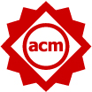
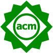
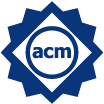
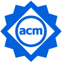

Call For Artifact Submissions
Attention: To ease our review process, we recommend authors use one of the
two styles to running your artifacts, both are Ubuntu 20.04 (amd64):
- Based on a virtual
machine (username & password: icse22ae): https://cowtransfer.com/s/c07faf79207545 code
(optional): vqx6qz
- Based on a docker: https://hub.docker.com/layers/ubuntu/library/ubuntu/20.04/images/sha256-57df66b9fc9ce2947e434b4aa02dbe16f6685e20db0c170917d4a1962a5fe6a9
In either case, please ensure any third party library installations
are included in your steps.
The artifact evaluation track aims to review, promote, share, and catalog the research artifacts of accepted software engineering papers. Authors of papers accepted to the Technical/SEIP/NIER/SEET/SEIS Tracks are can submit an artifact for the Artifacts Evaluated and Artifacts Available badges. Authors of any prior SE work (published at ICSE or elsewhere) are also invited to submit their work for the Results Validated badges. Definitions for the badges are given in the table below, taken from ACM Artifact Review and Badging Version 1.1.
|
Artifacts Evaluated |
Artifacts Available |
Results Validated |
||
|
Functional |
Reusable |
Available |
Reproduced |
Replicated |
|
|
 |
 |
 |
 |
|
The artifacts associated with the research are
found to be documented, consistent, complete, exercisable, and include
appropriate evidence of verification and validation. |
Functional + The artifacts associated with the
paper are of a quality that significantly exceeds minimal functionality. That
is, they have all the qualities of the Artifacts Evaluated –
Functional level, but, in addition, they are very carefully documented
and well-structured to the extent that reuse and repurposing is facilitated.
In particular, norms and standards of the research community for artifacts of
this type are strictly adhered to. |
Author-created artifacts relevant to this paper
have been placed on a publicly accessible archival repository. A DOI or link
to this repository along with a unique identifier for the object is provided. |
Τhe main results of the paper
have been obtained in a subsequent study by a person or team other than the
authors, using, in part, artifacts provided by the author. |
Τhe main results of the paper
have been independently obtained in a subsequent study by a person or team
other than the authors, without the use of author-supplied artifacts. |

Important Dates
-
Jan 21, 2022: Artifact abstract deadline.
-
Jan 28, 2022: Artifact submissions deadline.
-
Jan 29 - Feb 8, 2022: First Review period.
-
Feb 8 - Feb 18, 2022: Second Review period.
-
Feb 25, 2022: Notifications.
Best Artifact Awards
There will be two ICSE 2022 Best Artifact Awards to recognize the effort of authors creating and sharing outstanding research artifacts.
Submission for Replicated and Reproduced Badges
For “replicated” and “reproduced” badges, authors will need to offer appropriate documentation that their artifacts have reached that stage.
By January 21, 2022 register your research artifact at the ICSE 2022 Hotcrp site by submitting a two pages (max) abstract in PDF format describing your artifact.
The abstract should include the paper title, the purpose of the research artifact, the badge(s) you are claiming, and the technology skills assumed by the reviewer evaluating the artifact. Please also mention if running your artifact requires specific Operating Systems or other environments.
-
TITLE: A (Partial)? (Replication|Reproduction) of XYZ . Please add the term partial to your title if only some of the original work could be replicated/reproduced.
-
WHO: name the original authors (and paper) and the authors that performed the replication/reproduction. Include contact information and mark one author as the corresponding author. IMPORTANT : include also a web link to a publically available URL directory containing (a) the original paper (that is being reproduced) and (b) any subsequent paper(s)/documents/reports that do the reproduction.
-
WHAT: describe the “thing” being replicated/reproduced;
-
WHY: clearly state why that “thing” is interesting/important;
-
HOW: say how it was done first;
-
WHERE: describe the replication/reproduction. If the replication/reproduction was only partial, then explain what parts could be achieved or had to be missed.
-
DISCUSSION (if applicable): What aspects of this “thing” made it easier/harder to replicate/reproduce. What are the lessons learned from this work that would enable more replication/reproduction in the future for other kinds of tasks or other kinds of research.
Two PC members will review each abstract, possibly reaching out to the authors of the abstract or original paper. Abstracts will be ranked as follows.
-
If PC members do not find sufficient substantive evidence for replication/reproduction, the abstract will be rejected.
-
Any abstract that is judged to be unnecessarily critical towards others in the research community will be rejected (*).
-
The remaining abstracts will be sorted according to (a) how interesting they are to the community and (b) their correctness.
-
The top ranked abstracts will be invited to give lightning talks.
(*) Please note that our goal is to foster a positive environment that supports and rewards researchers for conducting replications and reproductions. To that end, it is important to encourage an atmosphere where presentations pay due respect to both work that is being reproduced/replicated and reproductions/replications. Criticism of other work related to the reproduction/replication is acceptable only as part of a balanced and substantive discussion of prior accomplishments.
Submission for Evaluated and Available Badges
Only authors of papers accepted to the 2022 Technical/SEIP/NIER/SEET/SEIS Tracks can submit candidate reusable or available artifacts.
By January 21, 2022 register your research artifact at the ICSE 2022 Hotcrp site by submitting a two pages (max) abstract in PDF format describing your artifact.
For the reusable and available badges, authors must offer “download information” showing how reviewers can access and execute (if appropriate) their artifact.
Authors must perform the following steps to submit an artifact:
-
Prepare the artifact
-
Making the artifact available
-
Documenting the artifact
-
Submit the artifact
1. Prepare the artifact
There are two options depending on the nature of the artifacts: Installation Package or Simple Package. In both cases, the configuration and installation for the artifact should take less than 30 minutes. Otherwise, the artifact is unlikely to be endorsed simply because the committee will not have sufficient time to evaluate it.
Installation Package. If the artifact consists of a tool or software system, then the authors need to prepare an installation package so that the tool can be installed and run in the evaluator’s environment. Provide enough associated instruction, code, and data such that some CS person with a reasonable knowledge of scripting, build tools, etc. could install, build, and run the code. If the artifact contains or requires the use of a special tool or any other non-trivial piece of software the authors must provide a VirtualBox VM image or a Docker container image with a working environment containing the artifact and all the necessary tools.
We expect that the artifacts have been vetted on a clean machine before submission.
Simple Package. If the artifact only contains documents which can be used with a simple text editor, a PDF viewer, or some other common tool (e.g., a spreadsheet program in its basic configuration) the authors can just save all documents in a single package file (zip or tar.gz).
2. Making the artifact available
The authors need to make the packaged artifact (installation package or simple package) available so that the Evaluation Committee can access it. We suggest a link to a public repository or to a single archive file in a widely available archive format.
If the authors are aiming for the badges “available” and beyond the artifact needs to publicly accessible. In other cases, the artifacts do not necessarily have to be publicly accessible for the review process. In this case, the authors are asked to provide a private link or a password-protected link. In either case, we encourage authors to ensure that artifact can be accessed with link only (e.g., no registration is necessary).
3. Documenting the artifact
The authors need to write and submit a documentation explaining how to obtain the artifact package, how to unpack the artifact, how to get started, and how to use the artifacts in more detail. The artifact submission must only describe the technicalities of the artifacts and uses of the artifact that are not already described in the paper.
The submission should contain the following documents (in plain text or pdf format) in a zip archive:
-
A README main file describing what the artifact does and where it can be obtained (with hidden links and access password if necessary). Also, there should be a clear description how to repeat/replicate/reproduce the results presented in the paper. Artifacts which focus on data should, in principle, cover aspects relevant to understand the context, data provenance, ethical and legal statements (as long as relevant), and storage requirements. Artifacts which focus on software should, in principle, cover aspects relevant to how to install and use it (and be accompanied by a small example).
-
A REQUIREMENTS file for artifacts which focus on software. This file should, in principle, cover aspects of hardware environment requirements (e.g., performance, storage or non-commodity peripherals) and software environments (e.g., Docker, VM, and operating system) but also, if relevant, a requirements.txt with explicit versioning information (e.g. for Python-only environments). Any deviation from standard environments needs to be reasonably justified.
-
A STATUS file stating what kind of badge(s) the authors are applying for as well as the reasons why the authors believe that the artifact deserves that badge(s).
-
A LICENSE file describing the distribution rights. Note that to score “available” or higher, then that license needs to be some form of open source license. Details also under the respective badges and the ICSE 2021 open science policy.
-
An INSTALL file with installation instructions. These instructions should include notes illustrating a very basic usage example or a method to test the installation. This could be, for instance, on what output to expect that confirms that the code is installed and working; and the code is doing something interesting and useful. A copy of the accepted paper in pdf format.
4. Submit the artifact
By January 21, 2022 register your research artifact at the ICSE 2022 Hotcrp site by submitting an abstract describing your artifact. The abstract should include the paper title, the purpose of the research artifact, the badge(s) you are claiming, and the technology skills assumed by the reviewer evaluating the artifact. Please also mention if running your artifact requires specific Operation Systems or other environments.
By January 28, 2021 complete your submission by making sure that all the content related to the actual artifact is available.
The Evaluation Committee may contact the authors within the Rebuttal Period to request clarifications on the basic installation and start-up procedures or to resolve simple installation problems. Information on the rebuttal phase are provided in the Submission and Reviewing Guidelines. Instructions will further be sent to the authors (and reviewers) along the reviewing process.
Given the short review time available, the authors are expected to respond within a 48-hour period. Authors may update their research artifact after submission only for changes requested by reviewers in the rebuttal phase. Author submitting an open source repository link, are expected to give a tag to time-stamp your submission.
Review Guidelines
For PC members, please refer to these guidelines of ESEC/FSE’2021 for artifacts evaluation process: https://2021.esec-fse.org/getImage/orig/fse_artifacts_submission_reviewing_guidelines.pdf
Finally, further information will be constantly made available on the website https://conf.researchr.org/track/icse-2022/icse-2022-artifact-evaluation
In case of questions, please do not hesitate contacting the chairs.
Yan CaiArtifact Evaluation Co-Chair
Institute of Software at Chinese Academy of Sciences
China
.jpg)
Andreas VogelsangArtifact Evaluation Co-Chair
University of Cologne
Germany
Sallam Abualhaija
University of Luxembourg
Luca Ardito
Politecnico di Torino
Italy
Fatma Başak Aydemir
Boğaziçi University
Turkey
Thais Batista
Federal University of Rio Grande do Norte
Brazil
Lola Burgueño
Open University of Catalonia
Spain
Jialiang Chang
CertiK
United States
Sridhar Chimalakonda
Indian Institute of Technology Tirupati
India
Daniel Alencar Da Costa
Queen's University, Kingston, Ontario
Canada
Ming Fan
Xi'an Jiaotong University
Yang Feng
Nanjing University
China
Davide Fucci
Blekinge Institute of Technology
Sweden
Ilias Gerostathopoulos
Vrije Universiteit Amsterdam
Netherlands
Gouri Ginde (Deshpande)
University of Calgary
Canada
Javier Gonzalez Huerta
Blekinge Institute of Technology
Catarina Gralha
NOVA-LINCS, FCT/UNL
Portugal
Jane Hayes
University of Kentucky
Kamil Jezek
University of West Bohemia, Pilsen, CZ
Verena Klös
Technische Universität Berlin
.jpg)
Sylwia Kopczyńska
Poznan University of Technology
Poland

Tong Li
Beijing University of Technology
Xiapu Luo
Hong Kong Polytechnic University
China
Ruijie Meng
National University of Singapore, Singapore
Singapore
.jpg)
Lloyd Montgomery
Universität Hamburg
Germany
Sébastien Mosser
McMaster University
Canada
.jpg)
Tukaram Muske
Tata Consultancy Services Ltd
India
Adriana Sejfia
University of Southern California
United States
.jpg)
Lin Shi
ISCAS
China
Matthew Stephan
Miami University
United States
.jpg)
Amjed Tahir
Massey University
New Zealand
Yutian Tang
ShanghaiTech University
China
Marco Tulio Valente
Federal University of Minas Gerais, Brazil
Lili Wei
Hong Kong University of Science and Technology
China
Colin Werner
University of Victoria
Canada
Mairieli Wessel
Delft University of Technology
Netherlands
Vadim Zaytsev
University of Twente, Netherlands
Netherlands
Man Zhang
Kristiania University College, Norway
Shihao Zhu
State Key Laboratory of Computer Science,Institute of Software,Chinese Academy of Sciences,China